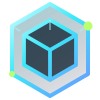
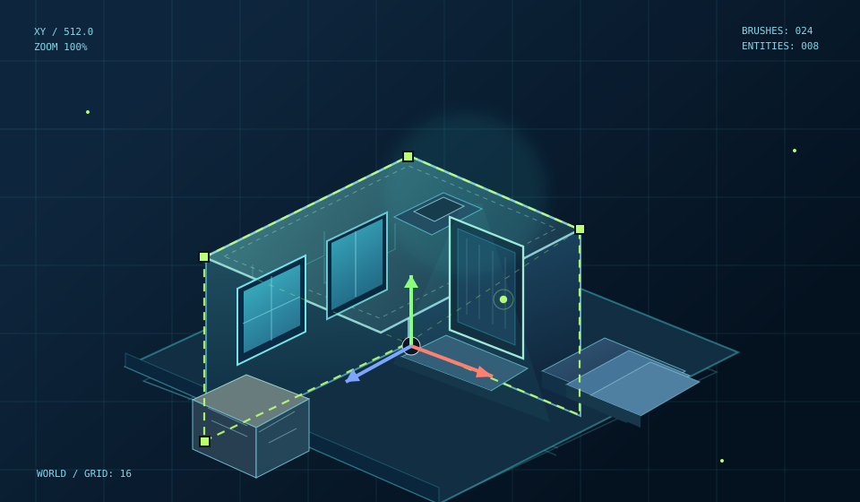

DOWNLOAD + START
Extract the complete Windows release and launch SvenStudio3D.bat. The editor opens locally.

SVENSTUDIOLEVEL DESIGN SYSTEM3DA complete 3D mapping workspace built for Sven Co-op. Design geometry, master textures, create gameplay, preview lighting and compile with real SDK tools.

Select a category and explore what each studio actually does. No endless feature list to scroll through.
One clear path from your first room to a compiled Sven Co-op level. SvenStudio runs locally in your browser; this website is only the project showcase.
SETUP & REQUIREMENTSExtract the complete Windows release and launch SvenStudio3D.bat. The editor opens locally.
Create brushes, align WAD textures, add FGD entities, lighting and game logic.
Run SC-CSG, SC-BSP, SC-VIS and SC-RAD. Check errors with Map Doctor and inspect your BSP.
Test the finished map in Sven Co-op, adjust your project, and build again.
Actual project screenshots. Open any image to inspect the tools and workspaces.
Your browser is the workspace. The editor and compiler tools run on your computer.
BuildTogether supports shared editing over trusted private networks; still experimental.
Use Sven Co-op SDK paths and resources. Verify compiled results in Sven Co-op.
Get the complete Windows release from GitHub. Extract the ZIP, run SvenStudio3D.bat and start building locally. The source-code download is not the same as the ready-to-run package.
Latest release available on GitHub
No. This is the project showcase and download page. The actual editor starts locally on your Windows computer and opens in your browser.
You can explore editing features locally, but the Sven Co-op game and compatible SDK tools and resources are needed to compile and properly test maps.
BuildTogether offers collaborative sessions, remote cursors and shared editing on trusted private networks. It's experimental: back up your project and do not expose the server publicly.
The editor has six interface languages: English, Spanish, Russian, Korean, Simplified Chinese and Brazilian Portuguese. This website offers English and Spanish.